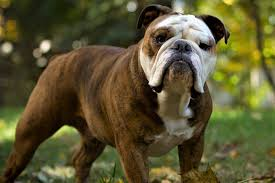

Be The Best Dog Owner With These Tips And Tricks
They say that a dog is man's best friend, and truer words have never been spoken. If you are a dog owner, you know how loyal and loving a dog can be. However, it is not enough just to love your dog. You also know how to care for your dog properly. The following advice will help.
You may know that chocolate is dangerous for dogs, but you may not know the specifics. Chocolate is dangerous because of the stimulants caffeine and theobromine. Baking chocolate is the most dangerous, with a high amount of stimulants. White chocolate contains the least amount of stimulants. Take you dog to vet if he ingests chocolate.
Keep on top of fleas. Not only can fleas cause infection in your dog, if one is swallowed, your pet can get tapeworms as well. Speak to your veterinarian about the best prevention method, but remember that this is not a one shot deal. You will have to continue your efforts over the life of your pet.
Do you have a "wrinkly" dog, like a bulldog? If so, you have to be conscientious about the grooming process in order to help keep your pet clean. After you brush, take a baby wipe and use it to get in between the folds on their body. Make sure, though, to get them fully dry after doing so.
If you have an outdoor English bulldog, build a shelter for him or buy one that is ready to use. If his feet are wet, extreme temperatures can be stressful and bad for his health. Keep your dog safe from wind, rain and snow by providing it with a house with lots of room and a dry floor.
When you are trimming your dog's nails, keep a close eye on the tips of the nails. Once you see a pale oval on the tip, stop clipping. This is a sign that you are close to the vein. If you go too far, apply a little bit of styptic powder to it to help stop the bleeding.
It is very important for you to keep your dog's ears clean. Keeping the inside of the ears clean will help prevent infections of the ear. This is also a good time for you to inspect the ear for fleas, ticks and any other pests that could have made your dog's ear home.

Dog training requires you to be consistent. Once you decide you want to establish a rule for your dog, do not make any exceptions. Make sure everyone at home helps you enforce the rule and encourage your guests not to let your dog jump on them or to not acknowledge your dog when it barks.
Check to make sure your dog's collar is adjusted properly by fitting two of your fingers comfortably underneath it and pulling gently. There should be just enough room to do this and no more, otherwise he may be able to wiggle out of it. Always keep it on, except during crate transport, as the collar can get snagged and injure.
Your dog should not be left outside for the entire day. This is done for various reasons, but your dog needs interaction with people. A dog with no companions can feel very isolated and stressed out if he is left alone outside. Also, they could be bitten by ticks, hurt by other animals or even abducted.
Certain dog breeds are prone to particular health issues, so find out what is typical for the type of dog you have. Do what you can to combat those issues early. Also, talk to your vet about things that can be done to increase the odds for your dog's breed.
If you are looking for dog of a particular breed, don't discount your local pound. Many pet owners will abandon dogs at pounds when they don't want them or can't keep them anymore. Contact the pound in your area to see what kinds of breeds they have at the time. You may save a poor dog's life if you do this.
If you are having trouble training your dog, see a professional. A lot of people wait until their problems are enormous, but if you would see a dog trainer as soon as you start having difficulty, you will find training goes more easily. Not only that, but you will save yourself a major headache.
If your female dog is in heat, be very careful with her around other dogs or she may become pregnant. It is possible for a male to pick up her scent from miles away. This can lead to aggression among other males, and you certainly don't want to be left with an unexpected litter of pups.
Your dog needs healthy teeth and you should brush them regularly. This helps to prevent dental problems and gum disease, but also prevents other illnesses. Infections in the mouth can spread to other areas of the dog's body, like the kidneys and the heart. Pet stores sell special toothpaste for dogs.
If your dog is covering everything in the house with his shedding fur, grab a paper towel. Lightly wet it with water and rub it down his back in the direction of fur growth. The loose hair should come off easily on the paper towel and your dog will love the attention too!
Make sure that you buy an appropriate sized collar for your dog in order to ensure its health and safety. If the collar is too lose, it may become snagged on something. If the collar is too tight, it may restrict the dog's breathing ability. Allow for a two finger space between the dog and the collar.
Never approach a French Bulldog you are unfamiliar with. Teach your children the same thing. An unfamiliar dog may look friendly, but he could have a vicious bite. Even if he is not a biter, he might jump on you, potentially causing harm. Always ask his owner for permission before approaching him.
After reading this article, you should have a better understanding of how to take care of your dog. By using this advice on a daily basis, you can enjoy many years of companionship with your furry friend. Keep your dog happy and healthy throughout its life by using these tips.